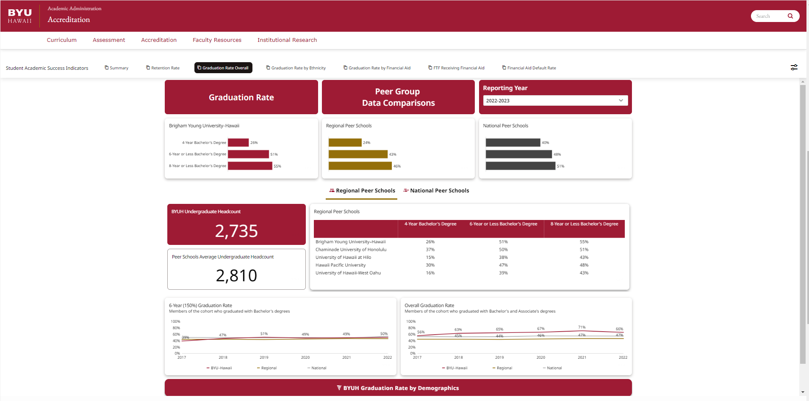
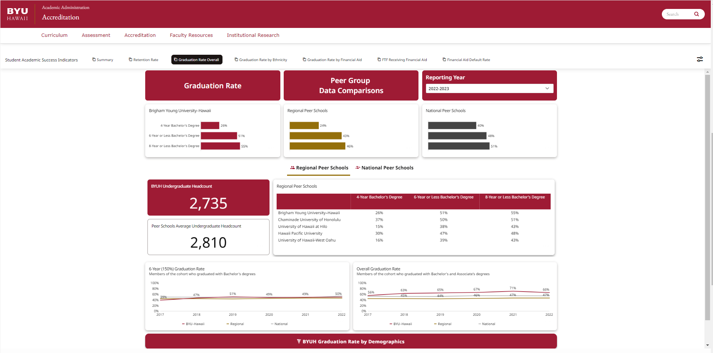

Our Guarantee
Transparent Insights, No Black Boxes
We provide clear, understandable explanations for every finding, model, and visualization. You'll always know how we got to the insights, with no confusing jargon or hidden complexities.

Collaborative Partnership & Support
We're more than just a vendor; we're an extension of your team. From data collection to deployment and ongoing support, we're with you every step of the way, ensuring your success.
Actionable Impact & Measurable Results
Our focus isn't just on data, but on driving tangible value. We deliver practical, implementable solutions designed to achieve your specific business goals and provide clear metrics of success.
What My Collaborators Say
Karl De Guzman
SIS Project Support Representative | Customer Relationship Management (CRM) | Student
June 2, 2025, Karl worked with Zia Buhain but on different teams
I had the chance to work with Zia in a group project using Domo, and she was a key part of our success. She often took the lead in meetings, helping us stay on track and making sure everyone was heard. Zia was always supportive, ready to help with any issues, and focused on finding the best solutions together. Her teamwork, leadership, and positive attitude made a big difference. I learned a lot from working with her and would be happy to team up again in the future.